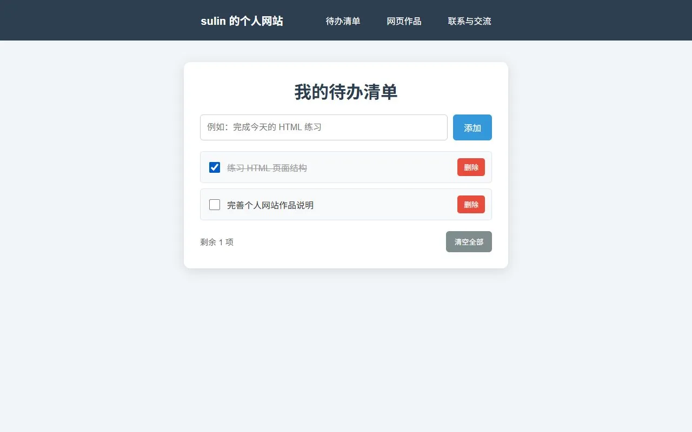
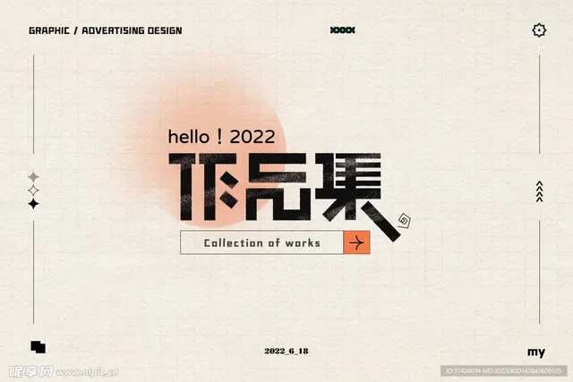

作品一：个人主页
通过个人介绍、技能卡片、作品展示和联系入口，练习完整网页的结构与布局。
使用技术：HTML、CSS、JavaScript。
练习内容：语义化页面结构、手机适配、分区导航与暗黑模式切换。
前端学习 · 网页制作 · 作品展示
你好，我是苏林，一名正在学习网页制作的学生。 我对HTML、CSS和网页设计很感兴趣， 希望通过不断练习， 做出属于自己的个人网站和作品展示页面。
这个网站主要用来介绍我自己， 展示我学习过的技能， 以及整理个人主页、待办清单等可以实际体验的网页练习。
能够使用HTML搭建网页基本结构。
正在学习使用CSS设置颜色、字体、 间距和页面布局。
正在学习制作网页交互效果。
了解导航栏、内容区、 作品区和页脚结构。
通过个人介绍、技能卡片、作品展示和联系入口，练习完整网页的结构与布局。
使用技术：HTML、CSS、JavaScript。
练习内容：语义化页面结构、手机适配、分区导航与暗黑模式切换。

用 JavaScript 制作可交互的任务清单，支持添加任务、标记完成、删除单项和清空清单。
使用技术：HTML、CSS、JavaScript。
练习内容：事件监听、动态创建列表和更新剩余任务数量。任务在刷新页面后清空。
以下图片用于图片展示和排版练习，网页项目的实际预览见上方。
